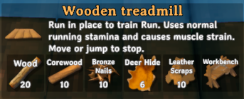

Fitness
A deer-hide treadmill and running muscle strain for Valheim.
42 seconds of outdoor running and treadmill training across Meadows, Black Forest, Swamp, Mountains, Plains and Mistlands. Original game audio and native HUD. Equipment, food and starting skills are staged; recorded stamina consumption and Run progression are native.
Download MP4
Build the treadmill
Hammer → Furniture, near a workbench. 20 Wood, 10 Core wood, 10 Bronze nails, 6 Deer hide and 10 Leather scraps.
